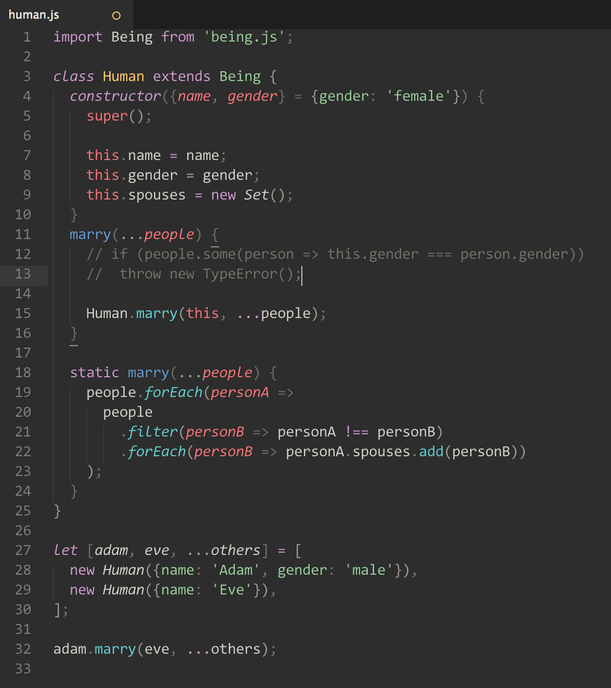

<!DOCTYPE html>
<title>Sublime Real Javascript</title>

<meta name="viewport" content="width=device-width, initial-scale=1, user-scalable=no, minimal-ui">

<style>
	html {
		font: 16px/1.6 "Open Sans", "Helvetica Neue", Helvetica, "Segoe UI", Arial, freesans, sans-serif;
		color: #333;

		word-wrap: break-word;

		height: 100%;
	}

	body {
		position: relative;
		/*max-width: 32em;*/
		/*max-width: 48em;*/
		margin: 0 auto;
		min-height: 100%;
	}

	main {
		/*margin: 0 1rem;*/
		margin: 0 4rem;
		padding: 3rem 0 3rem;
	}

	main>*:first-child {
		margin-top: 0 !important;
	}

	h1 {
		margin-top: 1em;
		margin-bottom: 1rem;

		font: 1.6em/1.2 "Avenir Next", "Open Sans", "Helvetica Neue", Helvetica, "Segoe UI", Arial, freesans, sans-serif;
	}

	h1 > strong {
		font-weight: 600;
	}

	p {
		color: #777;
	}

	footer {
		position: absolute;
		bottom: 1rem;

		line-height: 1rem;

		margin: 0 4rem;

		font-size: 0.6em;
		color: #777;
	}

	footer p {
		margin: 1rem 0;
		padding: 0;
	}

	footer p.view {
		font-size: 1rem;
	}

	a {
		color: #39c;
		font-weight: 400;
		text-decoration: none;
	}

	a small {
		/*font-size: 1em;*/
		font-size: 0.6rem;
		color: #777;
	}

	

	@media (max-width: 768px) {
		html {
			font-size: 22px;
		}

		img {
			max-width: 100%;
		}
	}

	@media (max-width: 450px) {
		html {
			font-size: 14px;
		}

		main {
			padding-top: 48px;
		}

		img {
			max-width: 100%;
		}
	}


	@font-face {
		font-family: 'open sans';
		font-weight: 400;
		font-style: normal;

		src: local('open sans'),url(/s/Open_Sans/OpenSans-Regular.ttf);
	}
	@font-face {
		font-family: 'open sans';
		font-weight: 600;
		font-style: normal;

		src: local('open sans'),url(/s/Open_Sans/OpenSans-SemiBold.ttf);
	}

</style>

<main>
	<h1>Sublime <strong>Real Javascript</strong></h1>

	<p>Real syntax highlighting rather than "keyword" highlighting.</p>
	<p></p>
</main>

<footer>
	<p class="view"><a href="https://github.com/bumfo/sublime-real-javascript">View the Project on GitHub <small>bumfo/sublime-real-javascript</small></a></p>
	<!-- <p>Hosted on GitHub Pages</p> -->
</footer>
